3 Graphics#
This chapter introduces the low-level and track-level functions that
add visual elements inside circular cells. Most mirror standard
Matplotlib or R base graphics primitives (points,
lines, segments, rect,
polygon, text, axis), extended
with polar-aware geometry.
Every low-level function accepts sector_index and
track_index to target a specific cell. By default, graphics
are drawn into the “current” sector and track, so calling them inside
panel_fun is the cleanest pattern. Outside
panel_fun, supply sector_index and
track_index explicitly:
circos.track(
...,
panel_fun=lambda x, y: circos.points(x, y),
)
circos.points(x, y, sector_index="a", track_index=1)We also cover links (circos.link()), sector/track
highlighting (draw.sector(),
highlight.sector()), and combining circlize-py
plots with Matplotlib Axes annotations.
3.1 Setting colors#
circlize-py provides utilities for continuous color
mapping, inverse value lookup, transparency adjustment, and distinct
random color generation (in addition to supporting all 657 R named
colors, R palette indices 1..8, hex #RRGGBB /
#RRGGBBAA, and Matplotlib color specs).
colorRamp2() (or color_ramp2()) builds a
continuous color-mapping callable by linearly interpolating between
break points in perceptual color space ("LAB" by default,
plus "RGB", "sRGB", "XYZ",
"LUV", and "HLS"). Values outside the break
range clamp to the endpoints:
import numpy as np
from circlize_py import colorRamp2
col_fun = colorRamp2([-2, 0, 2], ["blue", "white", "red"])
print(col_fun(np.arange(-5, 2, 1)))['#0000FFFF' '#0000FFFF' '#0000FFFF' '#0000FFFF' '#B38BFFFF' '#FFFFFFFF' '#FF9E81FF']add_transparency() adjusts color opacity with
transparency in [0, 1] (0 =
opaque, 1 = fully transparent):
from circlize_py import add_transparency
add_transparency("#FF0000", 0.5) # '#FF000080'rand_color() implements the randomColor.js
palette generator with optional hue,
luminosity, transparency,
friendly, and seed arguments:
import matplotlib.pyplot as plt
import numpy as np
from circlize_py import rand_color
fig, ax = plt.subplots(figsize=(7.6, 5.8))
xs = np.arange(1, 11)
specs = [
(1, dict(luminosity="random")),
(2, dict(luminosity="bright")),
(3, dict(luminosity="light")),
(4, dict(luminosity="dark")),
(5, dict(hue="red", luminosity="bright")),
(6, dict(hue="green", luminosity="bright")),
(7, dict(hue="blue", luminosity="bright")),
(8, dict(hue="monochrome", luminosity="bright")),
]
for y_row, kw in specs:
ax.scatter(xs, np.repeat(y_row, 10), s=520, c=rand_color(10, **kw))
ax.axis("off")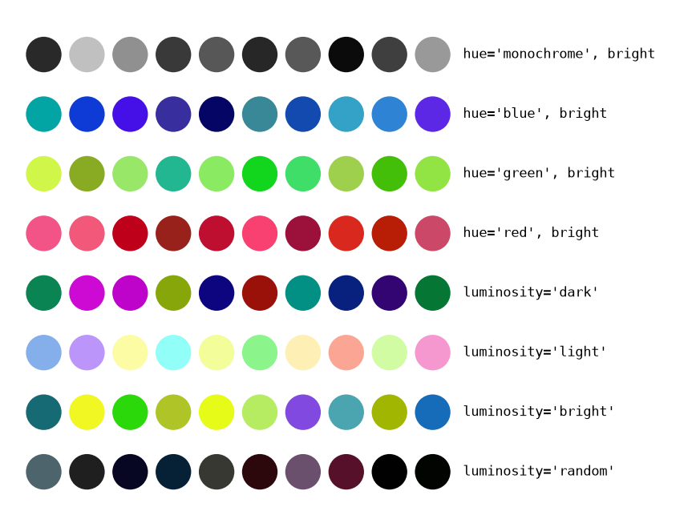
col2value() performs the inverse
transformation—recovering approximate numeric values from colors
generated by a colorRamp2() function:
from circlize_py import col2value, colorRamp2
col_fun = colorRamp2([-2, 0, 2], ["blue", "white", "red"])
value = np.round(np.arange(-2.0, 2.01, 0.2), 2)
cols = col_fun(value)
print(np.round(col2value(cols, col_fun=col_fun), 3))[-2. -1.796 -1.595 -1.391 -1.19 -0.987 -0.785 -0.586 -0.39 -0.199
-0. 0.176 0.359 0.545 0.743 0.942 1.151 1.36 1.575 1.786 2. ]3.2 Points#
circos.points() adds points inside a cell using
R-compatible pch marker codes (0..25 or
Matplotlib marker strings), col, bg, and
cex:
circos.points(x, y)
circos.points(x, y, sector_index="a", track_index=1)
circos.points(x, y, pch=16, col="red", cex=0.8)Its track-level companion circos.trackPoints() (or
circos_track_points()) splits x and
y by sectors and draws points across all cells
on a track simultaneously:
circos.track(...)
circos.trackPoints(sectors, x, y)While convenient for simple point overlays,
circos.points() inside panel_fun is
recommended because it composes cleanly with other primitives:
circos.track(sectors, x=x, y=y, panel_fun=lambda xv, yv: circos.points(xv, yv))Other primitives also provide circos.track*() batch
helpers (circos.trackLines(),
circos.trackText()) with the same calling pattern.
3.3 Lines#
circos.lines() draws line paths inside a cell. Setting
area=True fills the region between the curve and
baseline (which can be "bottom",
"top", or a numeric y-coordinate); col sets
the line color (or fill color when area=True), and
border controls the polygon outline when
area=True.
When type="h", vertical needles are drawn from
baseline to each y value, and
col, lwd, and lty can be passed
as sequences matching x. Supported type
options ("l", "o", "h",
"s") and area / baseline
combinations are illustrated below:
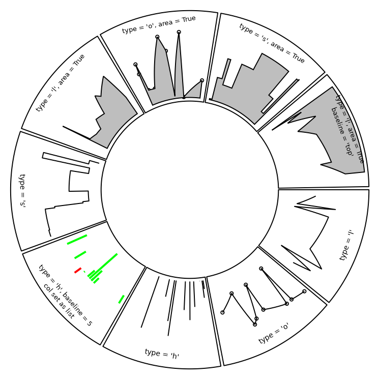
Straight lines in data coordinates curve into circular arcs on the
circle by subdividing each segment according to
circos.par("unit.circle.segments"), where each arc piece
has maximum length 2 * pi / unit_circle_segments. For
purely radial lines (or when straight chord segments are preferred for
performance), pass straight=True:
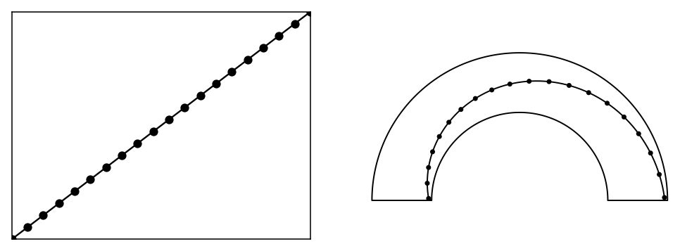
Common call patterns for circos.lines():
circos.lines(x, y)
circos.lines(x, y, sector_index="a", track_index=1)
circos.lines(x, y, col="red", lwd=1.5, lty=2, type="l", straight=False)
circos.lines(x, y, col="#CCCCCC", area=True, baseline="bottom", border="black")3.4 Segments#
circos.segments() draws individual line segments from
(x0, y0) to (x1, y1). Pass
straight=True for straight chord segments or radial
lines:
circos.segments(x0, y0, x1, y1)
circos.segments(x0, y0, x1, y1, straight=True)import numpy as np
from circlize_py import circos
circos.initialize(list("abcdefgh"), xlim=[0.0, 1.0])
def panel_seg(x, y):
vals = np.array([0.2, 0.4, 0.6, 0.8])
circos.segments(vals, 0.1, vals, 0.9)
circos.segments(0.1, vals, 0.9, vals)
circos.track(ylim=[0.0, 1.0], track_height=0.3, panel_fun=panel_seg)
circos.clear()
3.5 Text#
circos.text() draws labels in a cell with seven
circularly aware facing modes: "inside",
"outside", "clockwise",
"reverse.clockwise", "downward",
"bending.inside", and "bending.outside". Note
that "bending.inside" and "bending.outside"
bend single-line strings along the arc (split multi-line bent labels
into separate circos.text() calls).
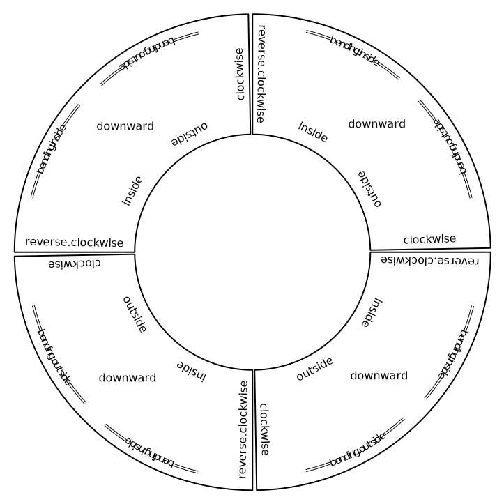
Common usages of circos.text():
circos.text(x, y, labels)
circos.text(x, y, labels, sector_index="a", track_index=1)
circos.text(x, y, labels, facing="inside", nice_facing=True, adj=[0.5, 0.5], cex=1.0, col="black", font=1)Without nice_facing=True (niceFacing=True),
labels in the lower or left halves of the circle can appear upside down.
Enabling nice_facing=True automatically flips text
orientation—and mirrors adj consistently—for
"inside", "outside", "clockwise",
"reverse.clockwise", "bending.inside", and
"bending.outside" so every label stays upright and
readable:
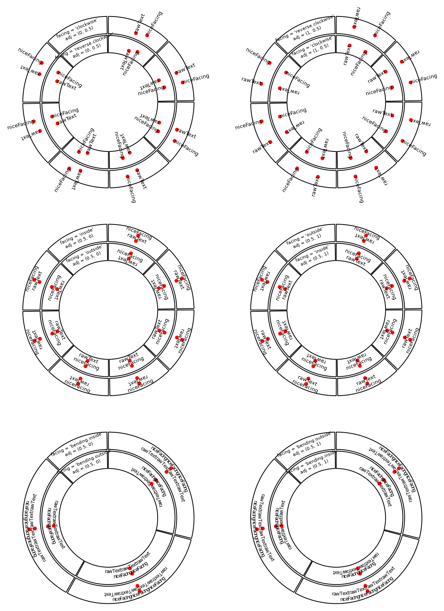
adj adjusts horizontal and vertical alignment in the
rotated text frame. When offsetting along the circular axis in degrees,
wrap the offset with degree() from
circlize_py:
from circlize_py import degree
circos.text(x, y, labels, adj=[0.0, degree(5)], facing="clockwise")To apply physical offsets in data coordinates, add
mm_x() / mm_y() (or cm_x() /
cm_y()):
circos.text(x + mm_x(2), y + mm_y(2), labels)3.6 Rectangles and polygons#
circos.rect() maps Cartesian rectangles
[xleft, xright] x [ybottom, ytop] onto circular cells whose
top and bottom edges follow circular arcs. All coordinate and style
arguments are vectorized:
circos.rect(xleft, ybottom, xright, ytop)
circos.rect(xleft, ybottom, xright, ytop, sector_index="a", track_index=1)
circos.rect(xleft, ybottom, xright, ytop, col="skyblue", border="black", lty=1, lwd=1.0)circos.polygon() draws closed polygons from
(x, y) vertices in data coordinates (subdividing edges into
smooth circular arcs):
circos.polygon(x, y)
circos.polygon(x, y, col="#CCCCCC", border=None, lty=1, lwd=1.0)The figure below uses circos.polygon() to shade a
pointwise standard-error confidence ribbon around a LOESS-smoothed trend
line in each sector:
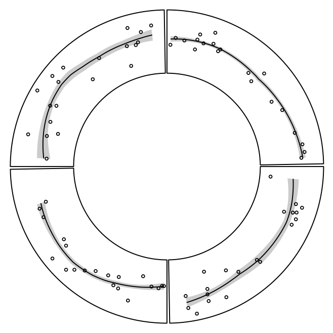
3.7 Axes#
circos.axis() (alias circos.xaxis()) adds
circular x-axes at h="top", h="bottom", or any
numeric y coordinate inside a cell. Major tick positions
(major_at) and labels (labels) exceeding
[xlim[0], xlim[1]] are clipped automatically, edge labels
are nudged inward when labels_pos_adjust=True, and label
orientation defaults to labels_nice_facing=True.
In the eight-sector showcase below:
- a: Automatic major ticks and default settings
(
h="top",direction="outside"). - b: Inward ticks (
direction="inside") withlabels_facing="outside". - c: Axis positioned along
h="bottom". - d: Bottom axis with inward ticks
(
direction="inside") andlabels_facing="reverse.clockwise". - e: Custom
major_at=[1, 3, 5, 7, 9]placed midway ath=5. - f: Custom string labels
(
labels=["a", "c", "e", "g", "f"]) withminor_ticks=0. - g: Hidden ticks (
major_tick=False) withlabels_facing="reverse.clockwise". - h:
minor_ticks=2, longer major ticks viamajor_tick_length=mm_y(5), andlabels_facing="clockwise".

Common call signatures for circos.axis():
circos.axis(h="top")
circos.axis(h="top", sector_index="a", track_index=1)
circos.axis(h=5, major_at=[1, 3, 5, 7, 9], labels=True, major_tick=True, direction="outside")
circos.axis(
h=2,
major_at=[1, 3, 5, 7, 9],
labels=["a1", "c1", "e1", "g1", "f1"],
minor_ticks=2,
major_tick_length=mm_y(5),
labels_cex=0.8,
labels_facing="clockwise",
)Radial y-axes are drawn with circos.yaxis() on either
the "left" or "right" border of a cell. Make
sure gap_degree / gap_after in
circos.par() leaves enough room between neighboring sectors
for y-axis labels:
circos.yaxis(side="left")
circos.yaxis(side="right", at=[0, 5, 10], labels=["low", "mid", "high"], sector_index="e", track_index=1)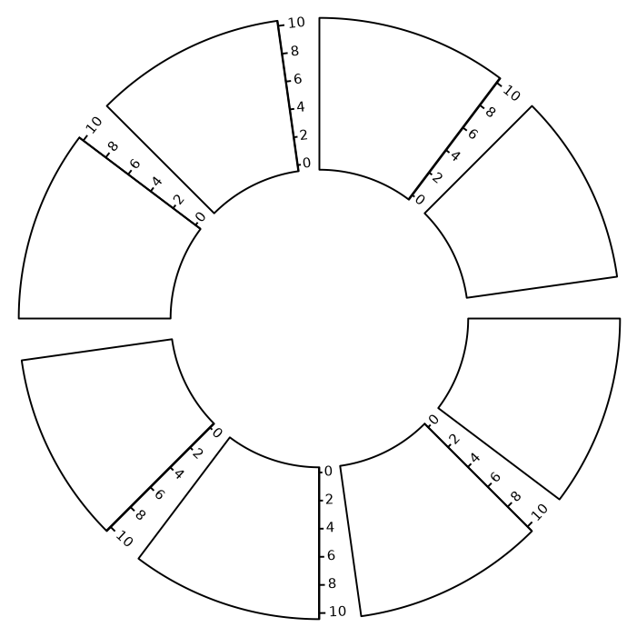
3.8 Barplots, boxplots and violin plots#
circos.barplot(), circos.boxplot(), and
circos.violin() position bars, boxes, or violins along
explicit x-axis coordinates (pos), so choose
xlim in circos.initialize() to frame all
positions cleanly.
circos.barplot() accepts a 1D vector (including signed
values extending above and below 0) or a 2D array/DataFrame
(drawing stacked bars by column):
import numpy as np
from circlize_py import circos
rng = np.random.default_rng(11)
pos = np.arange(1, 11) - 0.5
# Left: 1D positive & signed barplots
circos.initialize(list("abcd"), xlim=[0.0, 10.0])
circos.track(
ylim=[0.0, 1.0],
panel_fun=lambda x, y: circos.barplot(rng.uniform(0, 1, size=10), pos, col=list(range(1, 11))),
)
def panel_signed(x, y):
val = rng.uniform(-1, 1, size=10)
circos.barplot(val, pos, col=[2 if v > 0 else 3 for v in val])
circos.track(ylim=[-1.0, 1.0], panel_fun=panel_signed)
circos.clear()
# Right: 2D stacked barplot
circos.initialize(list("abcd"), xlim=[0.0, 10.0])
circos.track(
ylim=[0.0, 4.0],
panel_fun=lambda x, y: circos.barplot(rng.uniform(0, 1, size=(10, 4)), pos, col=[2, 3, 4, 5]),
)
circos.clear()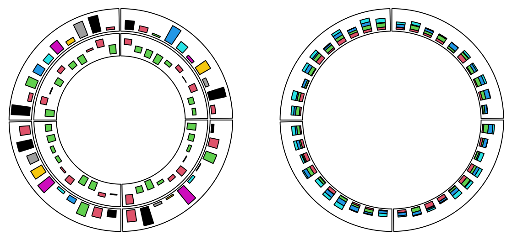
circos.boxplot() can draw individual boxes one at a time
from 1D arrays, or render a batch of boxes from a list of arrays or a 2D
matrix/DataFrame (by columns):
# One-by-one inside panel_fun
circos.initialize(list("abcd"), xlim=[0.0, 10.0])
circos.track(
ylim=[0.0, 1.0],
panel_fun=lambda x, y: [circos.boxplot(rng.uniform(0, 1, size=10), p) for p in np.arange(0.5, 10.0, 1.0)],
)
circos.clear()
# Batch list of vectors
circos.initialize(list("abcd"), xlim=[0.0, 10.0])
circos.track(
ylim=[0.0, 1.0],
panel_fun=lambda x, y: circos.boxplot(
[rng.uniform(0, 1, size=10) for _ in range(10)],
np.arange(1, 11) - 0.5,
col=list(range(1, 11)),
),
)
circos.clear()
circos.violin() shares the same single-vector and batch
list/matrix interface, estimating kernel density per distribution. Pass
max_density explicitly when normalizing violin widths
consistently across separate calls:
circos.initialize(list("abcd"), xlim=[0.0, 10.0])
circos.track(
ylim=[0.0, 1.0],
panel_fun=lambda x, y: [circos.violin(rng.uniform(0, 1, size=10), p) for p in np.arange(0.5, 10.0, 1.0)],
)
circos.clear()
circos.initialize(list("abcd"), xlim=[0.0, 10.0])
circos.track(
ylim=[0.0, 1.0],
panel_fun=lambda x, y: circos.violin(
[rng.uniform(0, 1, size=10) for _ in range(10)],
np.arange(1, 11) - 0.5,
col=list(range(1, 11)),
),
)
circos.clear()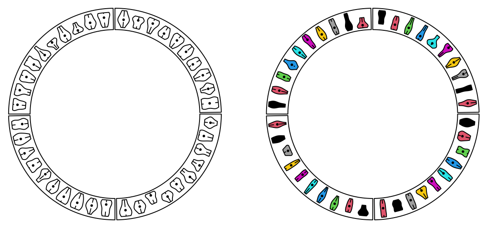
3.9 Circular arrows#
circos.arrow() draws curved arrows running parallel to a
track between x1 and x2 centered radially at
y. width, arrow_head_width, and
arrow_head_length are given in cell data units (and can use
mm_x(), cm_x(), mm_y()).
tail toggles between "normal" and
"point", and setting arrow_position="start"
reverses the pointing direction:
from circlize_py import CELL_META, circos, cm_x, rand_color
cols = rand_color(4, seed=44)
tails = ["point", "normal", "point", "normal"]
circos.initialize(list("abcd"), xlim=[0.0, 1.0])
circos.track(
ylim=[0.0, 1.0],
bg_border=None,
track_height=0.4,
panel_fun=lambda x, y: circos.arrow(
x1=0.0,
x2=1.0,
y=0.5,
width=0.4,
arrow_head_width=0.6,
arrow_head_length=cm_x(1.0),
col=cols[CELL_META.sector_numeric_index - 1],
tail=tails[CELL_META.sector_numeric_index - 1],
arrow_position="end", # or "start"
),
)
circos.clear()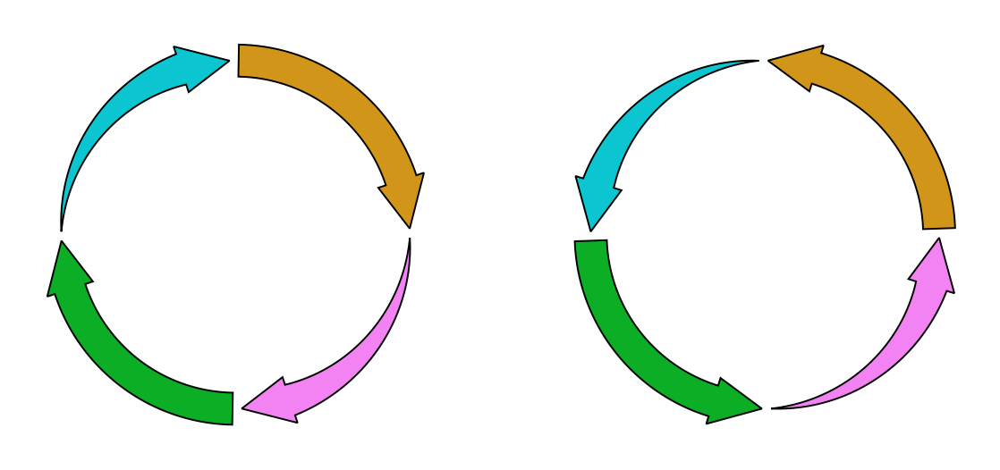
Circular arrows are natural for cyclic processes such as the
eukaryotic cell cycle (with sector widths proportional to phase
durations) or strand orientation along circular mitochondrial and
plasmid genomes (using arrow_position="start" for
reverse-strand features):
import numpy as np
import pandas as pd
from circlize_py import CELL_META, circos, cm_x
phases = ["G1", "S", "G2", "M"]
cell_cycle = pd.DataFrame(
{
"phase": pd.Categorical(phases, categories=phases, ordered=True),
"hour": [11.0, 8.0, 4.0, 1.0],
}
)
colors = ["#66C2A5", "#FC8D62", "#8DA0CB", "#E78AC3"]
circos.par(start_degree=90, points_overflow_warning=False)
xlim = np.column_stack([np.zeros(4), cell_cycle["hour"].to_numpy()])
circos.initialize(cell_cycle["phase"], xlim=xlim)
def panel_cycle(x, y):
circos.arrow(
CELL_META.xlim[0],
CELL_META.xlim[1],
arrow_head_width=CELL_META.yrange * 0.8,
arrow_head_length=cm_x(0.5),
col=colors[CELL_META.sector_numeric_index - 1],
)
circos.text(CELL_META.xcenter, CELL_META.ycenter, CELL_META.sector_index, facing="downward")
circos.axis(h=1.0, major_at=np.arange(0, int(round(CELL_META.xlim[1])) + 1), minor_ticks=1, labels_cex=0.6)
circos.track(ylim=[0.0, 1.0], bg_border=None, track_height=0.3, panel_fun=panel_cycle)
circos.clear()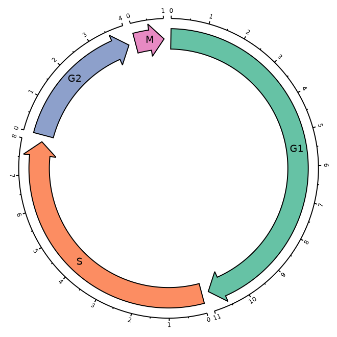
3.10 Labels#
circos.labels() adds two tracks—one for connector
segments and one for radially aligned text labels—while automatically
repelling crowded neighboring labels. Set side="inside"
(default) to place labels inward of existing tracks, or
side="outside" to place them outward:
# Inside labels
circos.initialize(sectors=list("abcdefgh"), xlim=[0.0, 1.0])
circos.track(ylim=[0.0, 1.0])
circos.labels(["a", "a", "b", "b"], x=[0.1, 0.12, 0.4, 0.6], labels=["0.1", "0.12", "0.4", "0.6"])
circos.clear()
# Outside labels (call before inner tracks)
circos.initialize(sectors=list("abcdefgh"), xlim=[0.0, 1.0])
circos.labels(["a", "a", "b", "b"], x=[0.1, 0.12, 0.4, 0.6], labels=["0.1", "0.12", "0.4", "0.6"], side="outside")
circos.track(ylim=[0.0, 1.0])
circos.clear()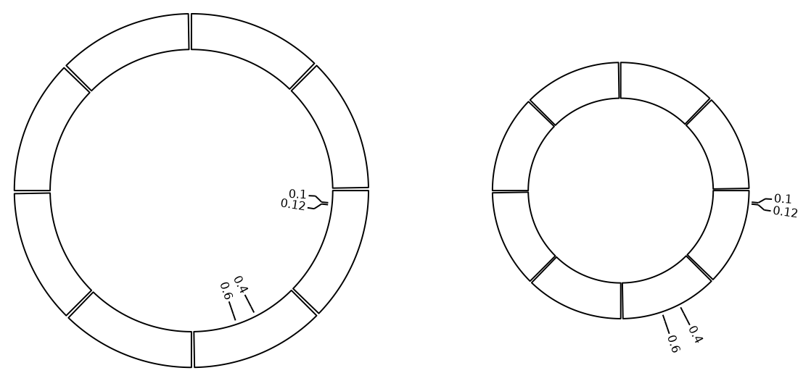
3.11 Raster image#
circos.raster() places a NumPy image array, PIL
Image, or image file path inside a cell with automatic
rotation matching facing ("inside",
"outside", "reverse.clockwise",
"clockwise", "downward") and
nice_facing. For flat rotated images, pass physical
dimensions such as width="1cm" or
height="20mm"; if only one dimension is specified, the
other preserves the image aspect ratio:
from circlize_py import CELL_META, circos, load_extdata
img = load_extdata("Rlogo.png")
circos.par(start_degree=90)
circos.initialize(list("abcde"), xlim=[0.0, 1.0])
facings = ["inside", "outside", "reverse.clockwise", "clockwise", "downward"]
def panel_logo(x, y):
f = facings[CELL_META.sector_numeric_index - 1]
circos.raster(img, CELL_META.xcenter, CELL_META.ycenter, width="1cm", facing=f)
circos.text(CELL_META.xcenter, CELL_META.ycenter, f, facing="inside", nice_facing=True, cex=0.85)
circos.track(ylim=[0.0, 1.0], panel_fun=panel_logo)
circos.clear()
Setting facing="bending.inside" or
"bending.outside" warps the raster directly onto the polar
grid by rendering pixels as circular rectangles in data coordinates
(width and height are mandatory in data units;
scaling < 1.0 downsamples large rasters for faster
plotting). Below, the 32 bundled Keith Haring tiles from
load_extdata("doodle") fill two concentric tracks:
from circlize_py import CELL_META, circos, load_extdata
imgs = load_extdata("doodle")
circos.par(cell_padding=[0.0, 0.0, 0.0, 0.0])
circos.initialize(list("abcdefghijklmnop"), xlim=[0.0, 1.0])
circos.track(
ylim=[0.0, 1.0],
track_height=0.25,
bg_border=None,
panel_fun=lambda x, y: circos.raster(
imgs[CELL_META.sector_numeric_index - 1],
CELL_META.xcenter,
CELL_META.ycenter,
width=CELL_META.xrange,
height=CELL_META.yrange,
facing="bending.inside",
scaling=0.5,
),
)
circos.track(
ylim=[0.0, 1.0],
track_height=0.25,
bg_border=None,
panel_fun=lambda x, y: circos.raster(
imgs[CELL_META.sector_numeric_index + 15],
CELL_META.xcenter,
CELL_META.ycenter,
width=CELL_META.xrange,
height=CELL_META.yrange,
facing="bending.inside",
scaling=0.5,
),
)
circos.clear()
3.12 Links#
Links and ribbons connect pairs of positions or intervals across
sectors inside the circle via circos.link(). Its four
required arguments are
(sector_index1, point1, sector_index2, point2). Single
scalar endpoints produce curved lines, whereas length-2 intervals
[start, end] produce ribbons:
circos.link(sector_index1, 0, sector_index2, 0)
circos.link(sector_index1, [0, 1], sector_index2, 0)
circos.link(sector_index1, [0, 1], sector_index2, [1, 2])
circos.link(sector_index1, [0, 1], sector_index2, 0, col="red", lwd=1.5, lty=2, border="blue")sectors = list("abcdefgh")
circos.par(points_overflow_warning=False)
circos.initialize(sectors, xlim=[0.0, 10.0])
circos.track(sectors, ylim=[0.0, 1.0], bg_col="grey", bg_border=None, track_height=0.05)
circos.link("a", 5, "c", 5, border="black")
circos.link("b", 5, "d", [4, 6], border="black")
circos.link("a", [2, 3], "f", [4, 6], border="black")
circos.link("e", [2, 3], "g", 5, border="black")
circos.clear()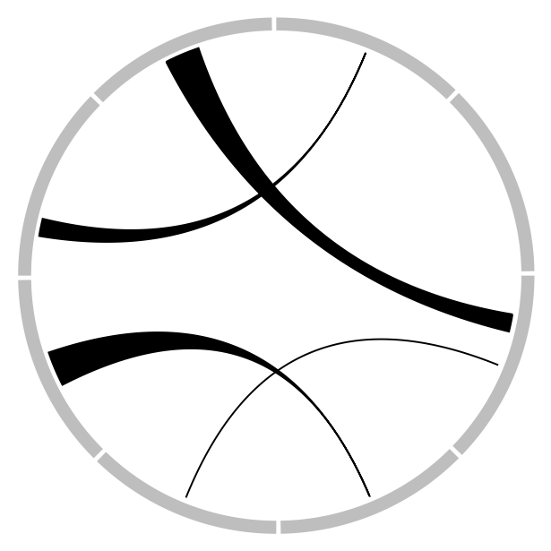
Radial attachment positions default to just inside the innermost
track, and can be overridden uniformly via rou or
independently via rou1 and rou2:
circos.link("a", 5, "c", 5, rou2=0.5, border="black")
circos.link("b", 5, "d", [4, 6], rou2=0.5, border="black")
circos.link("a", [2, 3], "f", [4, 6], rou2=0.5, border="black")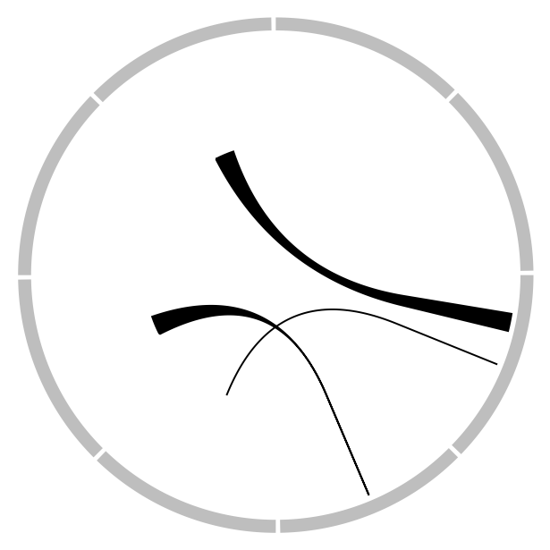
Link arch depth is controlled by h (top border) and
h2 (bottom border). Although circlize-py
computes sensible defaults automatically, very asymmetric or closely
spaced ribbons can self-intersect unless h and
h2 are set manually:
circos.link("a", 10, "b", [1, 9], border="black")
circos.link("c", 10, "d", [1, 9], h=0.5, h2=0.2, border="black")
When drawing many links at once, h_ratio (in
[0, 1], default 0.5) systematically scales how
deeply curves arch toward the center of the circle:
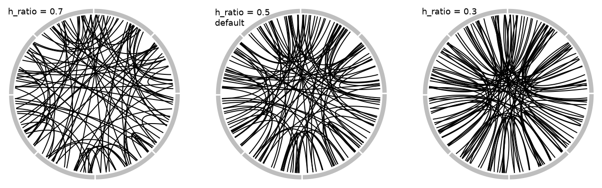
Because link curves are rational quadratic Bézier splines,
w and w2 adjust the Bézier control-point
weight (w > 1 pulls sharper toward the center,
w < 0 arches outward):

When both interval endpoints belong to the same sector and overlap, the ribbon degenerates cleanly into a rounded “hill”:
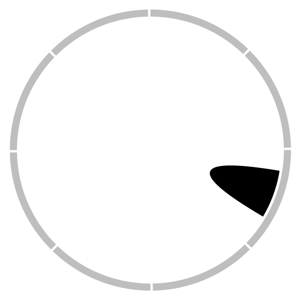
Directionality is added with directional (0
= none, 1 = end 1 to end 2, -1 = end 2 to end
1, 2 = bidirectional). Line links get terminal arrowheads,
while ribbons receive a centered directional arrow—or become a shaped
arrow ribbon when arr_type="big.arrow":
circos.link("a", 5, "b", 5, directional=1, arr_length=0.2)
circos.link("c", [3, 7], "d", [3, 7], directional=1, arr_col="white", arr_length=0.2)
circos.link("e", [4, 6], "f", [4, 6], directional=1, arr_type="big.arrow", arr_length=0.04)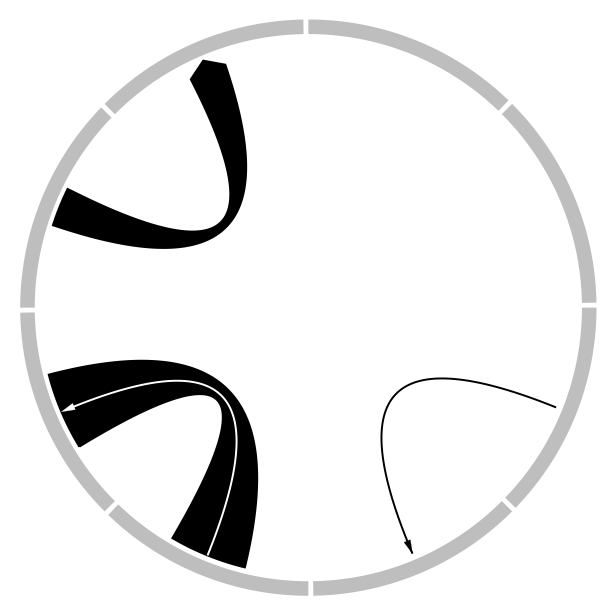
3.13 Highlight sectors and tracks#
draw.sector() (or draw_sector()) draws
standalone circular wedges, rings, or circles in polar coordinates on
the canvas:
draw.sector(start_degree, end_degree, rou1=1.0, rou2=None, center=(0, 0), clock_wise=True, col=None, border="black", lwd=1.0, lty=1)import matplotlib.pyplot as plt
from circlize_py import draw
fig, ax = plt.subplots(figsize=(5.4, 5.4))
ax.set_xlim(-1.05, 1.05)
ax.set_ylim(-1.05, 1.05)
ax.set_aspect("equal")
ax.axis("off")
draw.sector(20, 0, ax=ax)
draw.sector(30, 60, rou1=0.8, rou2=0.5, clock_wise=False, col="#FF000080", ax=ax)
draw.sector(350, 1000, col="#00FF0080", border=None, ax=ax)
draw.sector(0, 180, rou1=0.25, center=(-0.5, 0.5), border=2, lwd=2, lty=2, ax=ax)
draw.sector(0, 360, rou1=0.7, rou2=0.6, col="#0000FF80", ax=ax)
Combining draw.sector() with
get_cell_meta_data() and circlize() lets you
highlight arbitrary sectors, full tracks, cell blocks, or sub-regions
inside a cell:
from circlize_py import circos, circlize, draw, get_cell_meta_data
sectors = list("abcdefgh")
circos.initialize(sectors, xlim=[0.0, 1.0])
for _ in range(3):
circos.track(ylim=[0.0, 1.0])
circos.info(plot=True)
# Highlight sector "a"
draw.sector(
get_cell_meta_data("cell.start.degree", sector_index="a"),
get_cell_meta_data("cell.end.degree", sector_index="a"),
rou1=get_cell_meta_data("cell.top.radius", track_index=1),
col="#FF000040",
)
# Highlight track 1
draw.sector(
0,
360,
rou1=get_cell_meta_data("cell.top.radius", track_index=1),
rou2=get_cell_meta_data("cell.bottom.radius", track_index=1),
col="#00FF0040",
)
# Highlight tracks 2 & 3 across sectors "e" and "f"
draw.sector(
get_cell_meta_data("cell.start.degree", sector_index="e"),
get_cell_meta_data("cell.end.degree", sector_index="f"),
rou1=get_cell_meta_data("cell.top.radius", track_index=2),
rou2=get_cell_meta_data("cell.bottom.radius", track_index=3),
col="#0000FF40",
)
# Highlight sub-region [0.2, 0.8] x [0.2, 0.8] inside cell h:2
pos = circlize([0.2, 0.8], [0.2, 0.8], sector_index="h", track_index=2)
draw.sector(pos[0, "theta"], pos[1, "theta"], pos[0, "rou"], pos[1, "rou"], clock_wise=True, col="#00FFFF40")
circos.clear()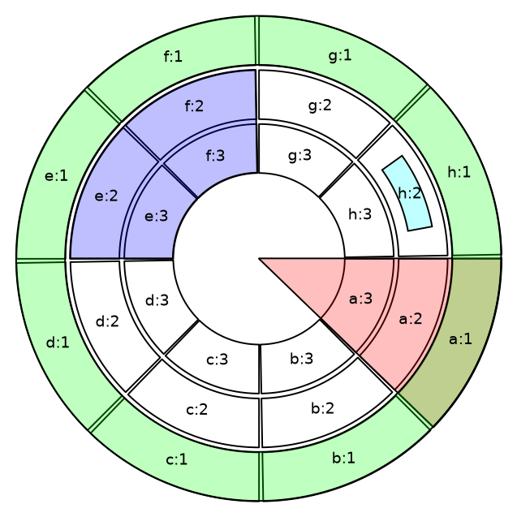
When highlighting whole cells or contiguous sector/track blocks,
highlight.sector() (or highlight_sector())
eliminates manual degree lookups, supports fractional
padding=[bottom, left, top, right] (or literal data units
via I(...)), and can place curved or rotated annotation
text with text and text_vjust (including
physical strings like "6mm"):
from circlize_py import circos, highlight
sectors = list("abcdefgh")
circos.initialize(sectors, xlim=[0.0, 1.0])
for _ in range(4):
circos.track(ylim=[0.0, 1.0])
circos.info(plot=True)
highlight.sector(
["a", "h"],
track_index=1,
text="a and h belong to a same group",
facing="bending.inside",
nice_facing=True,
text_vjust="6mm",
cex=0.8,
)
highlight.sector("c", col="#00FF0040")
highlight.sector("d", col=None, border="red", lwd=2)
highlight.sector("e", col="#0000FF40", track_index=[2, 3])
highlight.sector(["f", "g"], col=None, border="green", lwd=2, track_index=[2, 3], padding=[0.1, 0.1, 0.1, 0.1])
highlight.sector(sectors, col="#FFFF0040", track_index=4)
circos.clear()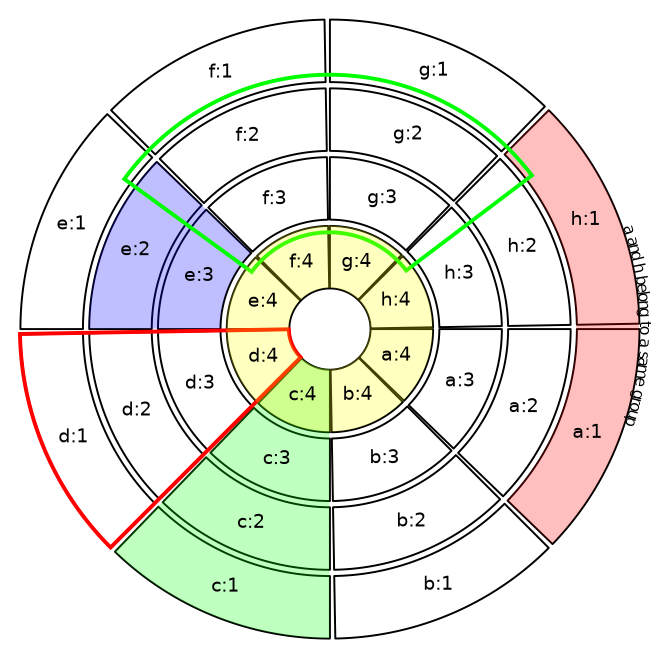
3.14 Work together with Matplotlib
Axes#
Because circlize-py renders directly onto a Matplotlib
Axes, you can freely combine circular plots with standard
Matplotlib annotations—titles, center labels, legends, or custom
artists—and use polar2Cartesian(circlize(...)) whenever you
want to map cell data coordinates onto canvas coordinates:
import matplotlib.pyplot as plt
import numpy as np
from matplotlib.lines import Line2D
from circlize_py import circos
fig, ax = plt.subplots(figsize=(6.0, 6.0), dpi=140)
sectors = list("abcd")
circos.initialize(sectors, xlim=[0.0, 1.0], ax=ax)
vals = np.arange(1, 21) / 20.0
circos.track(ylim=[0.0, 1.0], panel_fun=lambda x, y: circos.points(vals, vals))
ax.text(0.0, 0.0, "This is\nthe center", ha="center", va="center", fontsize=14)
handle = Line2D([0], [0], marker="o", linestyle="None", markerfacecolor="none", markeredgecolor="black", markersize=6)
ax.legend([handle], ["This is the legend"], loc="lower left", frameon=True, fontsize=9)
ax.set_title("This is the title", fontsize=14, fontweight="bold", pad=10)
circos.clear()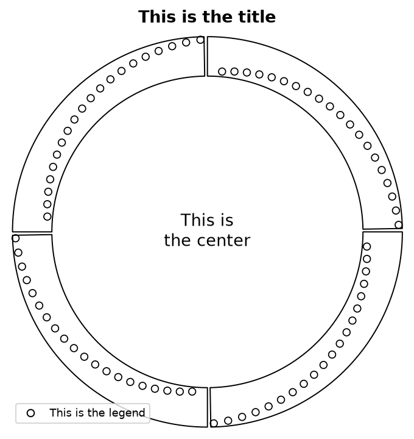